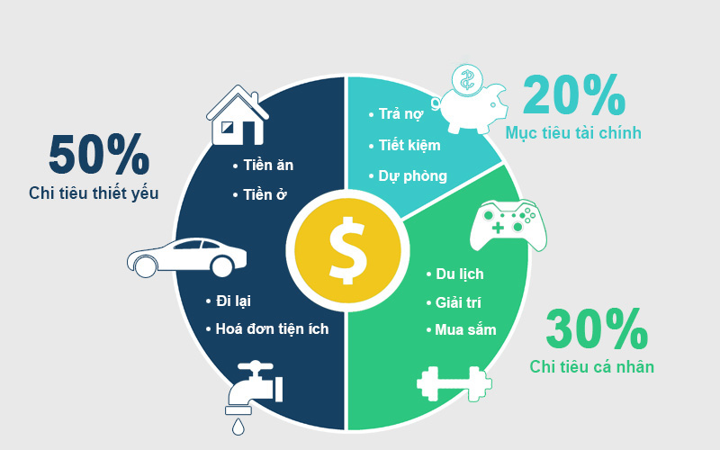

Giải mã phương pháp 50/20/30 trong quản lý tài chính cá nhân hiệu quả
Theo các bạn “giàu có” nghĩa là gì?
Có một định nghĩa rất hay được đề cập trong cuốn sách "Cha giàu, cha nghèo" của tác giả Robert Kiyosaki rằng “giàu có” có nghĩa là nếu như bây giờ các bạn không làm gì nữa cả, thì tất cả những tài sản mà các bạn đang có sẽ giúp cho các bạn sống được trong bao nhiêu lâu? Nếu như các bạn sống được càng lâu thì điều đó có nghĩa là các bạn càng “giàu có”.
Để sống một cuộc sống thoải mái và tự do hơn và không phải lo nghĩ về tài chính quá nhiều mỗi tháng, thì điều mà các bạn cần làm đầu tiên đó chính là "Kỷ luật và nguyên tắc". Chính vì vậy, Active Ageing Vietnam muốn chia sẻ phương pháp 50/20/30, một phương pháp quản lý tài chính cá nhân vô cùng hiệu quả mà ai cũng nên biết. Vậy, quy tắc 50/20/30 hoạt động như thế nào? Quy tắc này sẽ chia nhỏ thu nhập của bạn thành 3 danh mục chính bao gồm khoản chi cho nhu cầu thiết yếu, khoản chi cho những thứ sở thích và tiết kiệm, đầu tư với tỷ lệ phần trăm lần lượt là 50-20-30.
50% thu nhập của bạn - Các yếu tố cần thiết
Để bắt đầu, hãy dành ra không quá một nửa thu nhập của bạn cho những nhu cầu thiết yếu trong cuộc sống. 50% có thể là một tỷ lệ cao nhưng một khi xem xét những danh mục thuộc các chi phí cần thiết bạn mới thấy con số đó có ý nghĩa.
Nói một cách rõ ràng, chi phí thiết yếu là những khoản mà bạn chắc chắn phải bỏ ra bất kể bạn ở đâu, làm gì hay có kế hoạch gì trong tương lai. Thông thường, những chi phí này thường giống nhau ở hầu hết mọi người, bao gồm tiền ăn, tiền ở, chi phí đi lại và các hóa đơn tiện ích như điện, nước.
Hãy cố gắng để tổng chi phí thiết yếu không vượt quá 50% lương. Nhưng nếu con số đó lớn hơn 50%, hãy thử giảm tiền các hóa đơn xuống như sử dụng phương tiện công cộng thay vì phương tiện cá nhân,…Mà nếu không thể làm được điều đó nữa thì bắt buộc bạn phải giảm 5% ở mỗi danh mục tiếp theo. (Các chuyên gia khuyên bạn cắt giảm ở phần chi tiêu cá nhân, chứ không nên giảm ở mục tiêu tài chính).
20% thu nhập của bạn – Mục tiêu tài chính
Bước tiếp theo là dành 20% lương để dành cho mục tiêu tài chính bao gồm tiết kiệm, trả nợ và quỹ dự phòng. Danh mục này chỉ nên được bổ sung khi danh mục chi phí thiết yếu đã được xét đến và trước khi bạn kịp nghĩ đến bất cứ điều gì thuộc danh mục chi tiêu cá nhân.
Nếu bạn đạt được mục tiêu 50% hoặc ít hơn thu nhập dành cho chi phí thiết yếu và 20% hoặc lớn hơn dành cho mục tiêu tài chính, bạn sẽ có thể trả nợ nhanh hơn hoặc nếu không bạn sẽ ít phải lo lắng hơn khi bước vào tuổi nghỉ hưu. "Nghỉ hưu" có thể là một khái niệm chưa thực sự cần thiết ở tuổi 20, 30 nhưng hãy nhớ bạn càng bắt đầu tiết kiệm sớm bao nhiêu thì tuổi già của bạn càng thoải mái bấy nhiêu khi không phải nghĩ đến chuyện tích cóp hằng ngày.
30% thu nhập của bạn – Chi tiêu cá nhân
Danh mục cuối cùng và cũng là yếu tố có thể tạo ra sự khác biệt lớn nhất trong ngân sách của bạn – những chi phí không thiết yếu. Một số chuyên gia tài chính xem xét đây là danh mục hoàn toàn linh hoạt nhưng trong cuộc sống hiện đại, nhiều người cho rằng một số thứ thuộc những thứ "xa xỉ" là một phần không thể thiếu với họ. Lý do danh mục này chiếm phần trăm lớn hơn mục tiêu tài chính là bởi có quá nhiều thứ thuộc vào đây.
Những chi phí phục vụ cuộc sống cá nhân bao gồm tiền điện thoại, thực phẩm giải trí, du lịch, mua sắm,…Cũng giống như danh mục chi phí thiết yếu, 30% là tỷ lệ tối đa bạn nên dành cho cuộc sống cá nhân. Chi phí thuộc danh mục này càng ít tương lại tài chính càng được đảm bảo khi bạn về hưu.
Nhắc đến quản lý tài chính, nhiều người thường cho rằng: "Tôi không có tiền, thu nhập thì thấp, không biết quản lý, mà quản lý thì có tác dụng gì đâu". Tuy nhiên, tiền bạc là thứ cần tích lũy từng chút từng chút một. Đừng nói bạn không có tiền nên không cần quản lý, ngược lại, cần phải học xong cách quản lý, chi tiêu cho hợp, bạn mới có thể có tiền.
Tuy nhiên cũng cần lưu ý rằng, quy tắc 50/20/30 này không thể áp dụng một cách hoàn hảo cho mọi người trong mọi trường hợp mà chúng chỉ là hướng dẫn để bạn có thể áp dụng một cách linh hoạt cho quỹ ngân sách của mình. Bạn có thể linh hoạt thay đổi tỷ lệ phần trăm dựa vào những ưu tài chính của bản thân. Hãy nhớ là tiền đã vào túi mình rồi thì đừng để nó trôi đi chỗ khác và vụt mất nhé. Active Ageing Vietnam chúc các bạn sẽ quản lý tài chính cá nhân thật thành công!